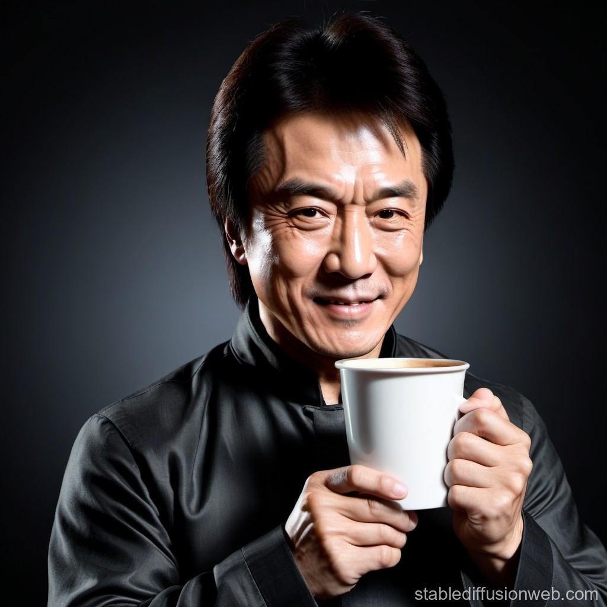
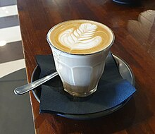

Your daily dose of coffee inspiration and recipes!
Coffee in the Past & Coffee Culture Today
Coffee's journey continued with its introduction to Europe in the 16th century. European coffee
houses began to emerge, serving as important social hubs where intellectuals and artists would
congregate for conversations and creative inspiration. Coffee quickly became a symbol of refinement
and sophistication, with its consumption spreading to other parts of the world through global trade.
Today, coffee is a beloved beverage enjoyed by millions around the world. It has become a national
drink of choice in many countries, where coffee culture has flourished with the rise of specialty
coffee shops and the widespread availability of coffee beans from different regions. The cultural
significance of coffee is undeniable, as it continues to bring people together and play a vital role
in daily lives across the globe.
• A wise man once said There's never a wrong time to have a coffee..
It's coffee o'clock
• Famous statement by the globally renowned artist, Jackie Chan.
This notion underscores the belief that coffee transcends mere consumption, serving as a medium that
fosters connections among both old friends and new acquaintances.

Coffee is a language in itself
Featured coffees for the day!
A cup of espresso from the comune of Ventimiglia,
Italy
Latte served with microfoam latte art in a South Australian café A cappuccino served in the appropriate cup
Fun Facts
Coffee is a fruit
Despite it being called a ‘bean’, coffee is actually a fruit.
The ‘beans’ grow on a bush and are
found in the centre of a berry, known as a coffee cherry.
Beethoven loved coffee
This may surprise you, but infamous composer, Beethoven, loved coffee!
He was apparently quite
obsessive about it, using precisely 60 beans per cup and would spend time counting out each and
every
bean.